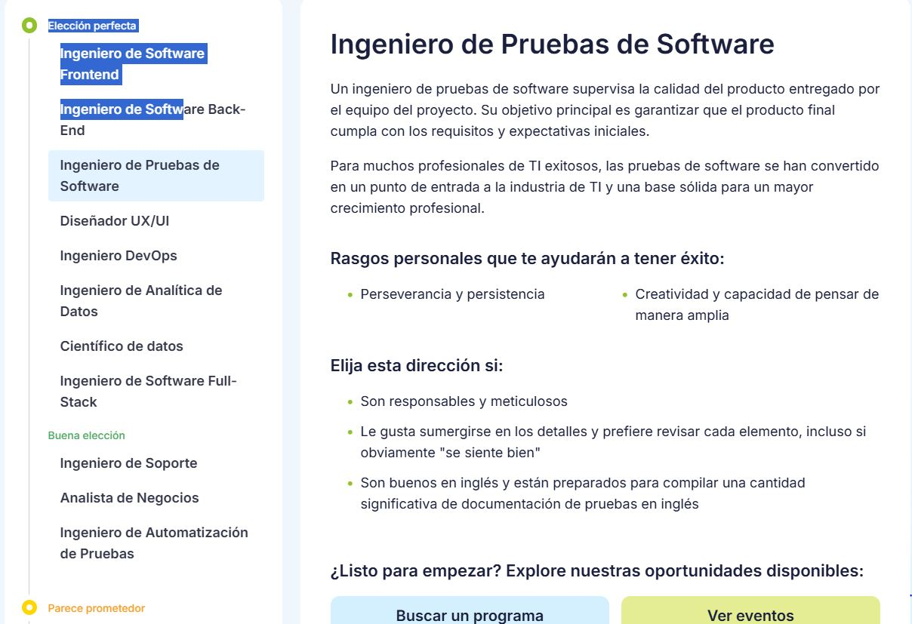

Segun la encuesta podemos observar diferentes puntos de vista sobre trabajas y situaciones a desarrollar en la sociedad.
asi mismo al final podemos observar un total de puntos segun las repsuestas que marcamos y ayudandonos aleegir algun trabajo a nustro gusto
mi favorita seria arquitectura pero no me gustan las figuras geometricas, otros serian musica y arte
esta esta creada para mostrrar un poco como tu situacion personal y tus acciones puedne ayudarte a encontrar una ingenieria
